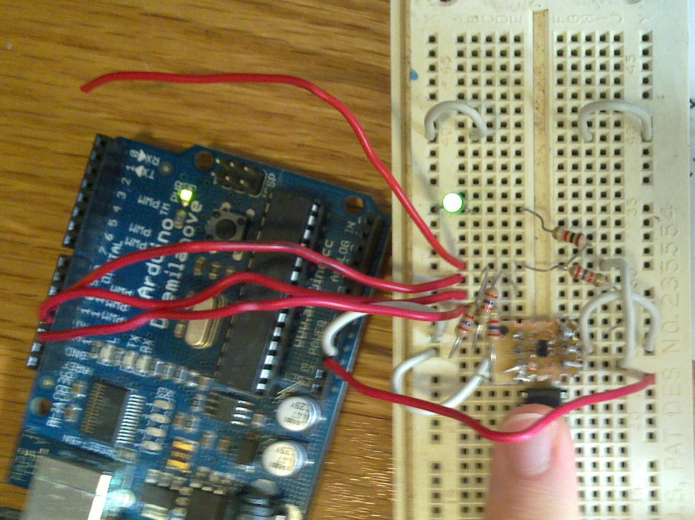

Arduinos can be used to program AVR microcontrollers . I had some fun soldering an ATtiny4 microcontroller, which is a tiny 6 legged SOT23-6 package, onto a piece of perf board so I could connect it to an Arduino. The very small ATtiny microcontrollers don't use the regular ISP protocol that the other AVR chips use. They use the Tiny Programming Interface instead. Thankfully someone has implemented it for Arduino so I was still able to get it programmed.
Done in undergrad